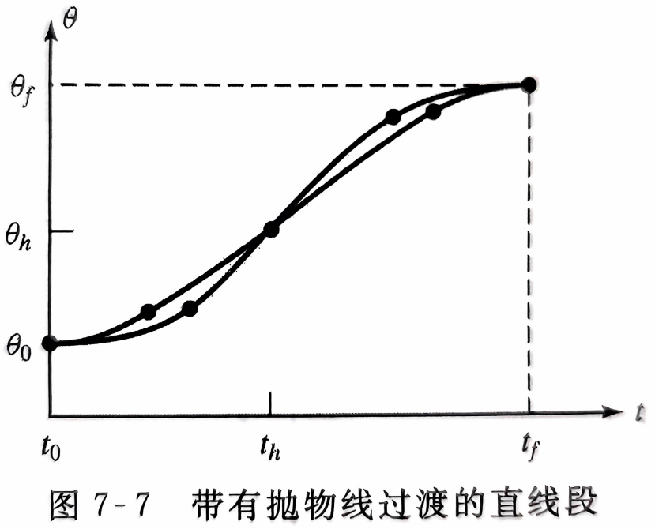
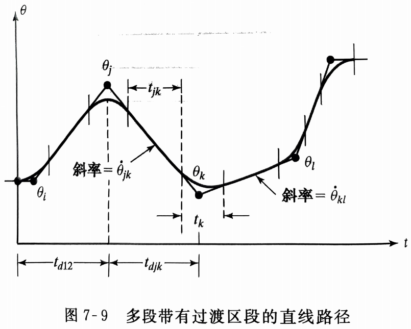
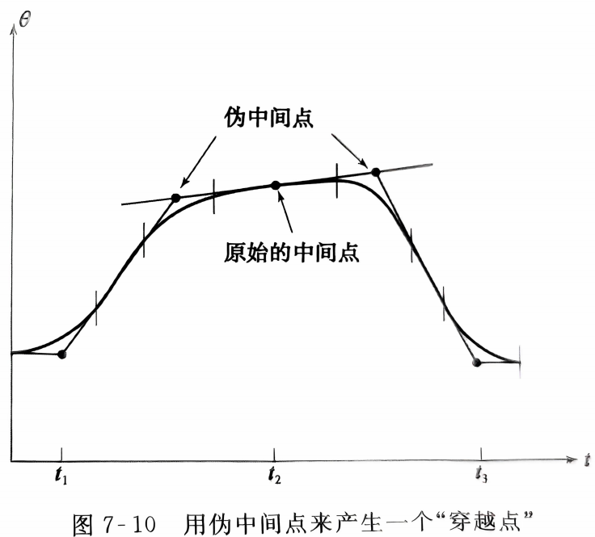
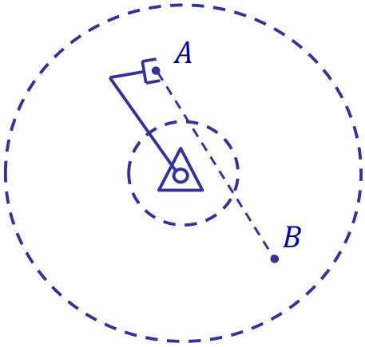
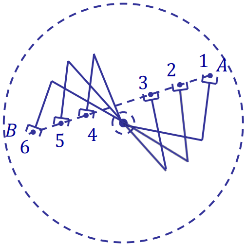
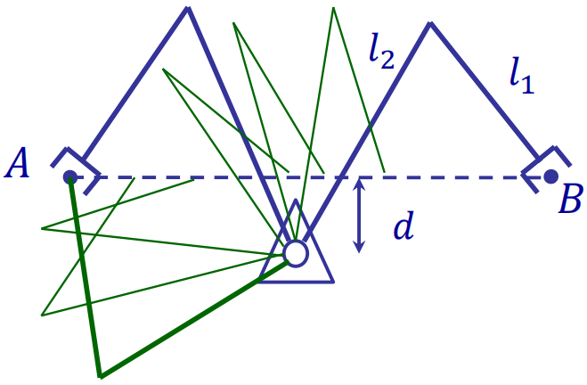

轨迹生成
路径描述与生成综述
在大多数情况下，将操作臂的运动看做工具坐标系相对于固定坐标系的运动。
路径描述的基本问题是将工具坐标系从当前值$\{T_{initial}\}$移动到最终期望值$\{T_{final}\}$，包括工具相对于工作台的姿态变化和位置变化。
有时需要在路径描述中给出一系列期望中间点，这些中间点以及初始点和最终点统称为路径点。
通常期望操作臂的运动是平滑的，因为笨拙、急速的运动会加剧机构间的磨损，为此要定义一个连续且具有连续一阶导数甚至二阶导数的平滑函数。
关节空间的规划方法
给定工具坐标系$\{T\}$相对于固定坐标系$\{S\}$每个路径点的期望位置和姿态，应用逆运动学理论求解出每个点对应的期望关节角，从而得到各个关节的平滑函数。关节空间规划方法便于计算，且不会发生机构的奇异性问题。
三次多项式
一条确定的光滑运动曲线至少需要对$\theta(t)$施加4个约束条件。由初始值和最终值得到两个约束条件：
$\theta(0)=\theta_0$
$\theta(t_f)=\theta_f$
保证关节速度连续，即初始时刻和终止时刻关节速度为零，得到两个约束条件：
$\dot{\theta}(0)=0$
$\dot{\theta}(t_f)=0$
次数至少为3的多项式才能满足这4个约束条件（4个系数对应4个条件），该三次多项式有如下形式：
$\theta(t)=a_0+a_1t+a_2t^2+a_3t^3$
对应关节速度和加速度为：
$\dot{\theta}(t)=a_1+2a_2t+3a_3t^2$
$\ddot\theta(t)=2a_2+6a_3t$
将4个约束条件代入上式可解出：
$a_0=\theta_0$
$a_1=0$
$a_2=\frac{3}{t_f^2}(\theta_f-\theta_0)$
$a_3=-\frac{2}{t_f^3}(\theta_f-\theta_0)$
具有中间点的路径的三次多项式
对具有中间点的路径，按中间点分割成多段，对每一段应用三次多项式的求解，此时每一段的初始速度与终止速度不再为零，即：
$\dot\theta(0)=\dot\theta_0$
$\dot\theta(t_f)=\dot\theta_f$
将约束条件代入可解出：
$a_0=\theta_0$
$a_1=\dot\theta_0$
$a_2=\frac{3}{t_f^2}(\theta_f-\theta_0)-\frac{2}{t_f}\dot\theta_0-\frac{1}{t_f}\dot\theta_f$
$a_3=-\frac{2}{t_f^3}(\theta_f-\theta_0)+\frac{1}{t_f^2}(\dot\theta_f+\dot\theta_0)$
中间点的期望关节速度的确定方法：
- 用户给出每个中间点的笛卡尔速度，应用在中间点上计算出的操作臂雅可比逆矩阵将其映射为关节速度。该方法可以满足用户的需求，但总是要求用户指定速度也是一个负担。
- 在笛卡尔空间或关节空间中使用适当的启发算法，系统自动选择合理的过渡速度。
- 系统根据中间点处的加速度为连续的原则选取各点的速度。
高次多项式
有时用高次多项式作为路径曲线段。例如如果要确定路径曲线段的起始点和终止点的位置、速度和加速度，则需要用一个五次多项式进行差值，即：
$\theta(t)=a_0+a_1t+a_2t^2+a_3t^3+a_4t^4+a_5t^5$
其解为：
$a_0=\theta_0$
$a_1=\ddot\theta_0$
$a_2=\frac{\ddot\theta_0}{2}$
$a_3=\frac{20\theta_f-20\theta_0-(8\dot\theta_f+12\dot\theta_0)t_f-(3\ddot\theta_0-\ddot\theta_f)t_f^2}{2t_f^3}$
$a_4=\frac{30\theta_0-30\theta_f+(14\dot\theta_f+16\dot\theta_0)t_f+(3\ddot\theta_0-2\ddot\theta_f)t_f^2}{2t_f^4}$
$a_5=\frac{12\theta_f-12\theta_0-(6\dot\theta_f+6\dot\theta_0)t_f-(\ddot\theta_0-\ddot\theta_f)t_f^2}{2t_f^5}$
还有多种算法来求解描述该轨迹的平滑函数，本章暂不介绍。
带有抛物线过渡的线性函数
另一种可选的关节运动曲线是直线，即简单地从当前的关节位置进行线性插值直到终止位置。但单纯线性插值将导致关节运动速度不连续，因此应该在每个路径点的邻域内增加一段抛物线作为过渡。
上图直线函数和两个抛物线函数组合成一条完整的位置与速度均连续的路径。这里存在多个解，但每个结果都对称于时间中点$t_h$和位置中点$\theta_h$。由于过渡区段终点的速度必须等于直线部分的速度，所以有：
$\ddot\theta t_b=\frac{\theta_h-\theta_b}{t_h-t_b}$①
其中$\theta_b$为过渡区段终点的$\theta$值，$\ddot\theta$是过渡区段的加速度。$\theta_b$的值由下式给出：
$\theta_b=\theta_0+\frac{1}{2}\ddot{\theta}t_b^2$②
联立①②，且期望的运动时间$t=2t_h$，得：
$\ddot\theta t_b^2-\ddot\theta tt_b+(\theta_f-\theta_0)=0$
对于任意给定的$\theta_f$、$\theta_0$和$t$，可通过选取满足上式的$\ddot\theta$和$t_b$来获得任一条路径。
通常先选好$\ddot\theta$，再求解相应的$t_b$：
$t_b=\frac{t}{2}-\frac{\sqrt{\ddot\theta^2t^2-4\ddot\theta(\theta_f-\theta_0)}}{2\ddot\theta}$
上式有解的加速度限制条件为：
$\ddot\theta\geqslant\frac{4(\theta_f-\theta_0)}{t^2}$
加速度越大，过渡区段长度越短，路径越接近直线。
带有抛物线过渡的线性函数用于经过中间点的路径
上图在关节空间中为某个关节$\theta$的运动指定了一组中间点，每两个中间点之间使用线性函数相连，而各中间点附近使用抛物线过渡。
用$j$、$k$和$l$表示三个相邻的路径点，位于路径点$k$处的过渡区段时间间隔为$t_k$，位于点$j$和$k$之间的直线部分时间间隔为$t_{jk}$，点$j$和$k$之间的总时间间隔为$t_{djk}$，直线部分的速度为$\dot\theta_{jk}$，点$j$处过渡区段的加速度为$\ddot\theta_j$。
已知所有路径点$\theta_k$、期望的时间区间$t_{djk}$和每个路径点处的加速度$\ddot\theta_k$。
对于内部路径点，有如下公式：
直线段速度为两个路径点位置的平均变化率：$\dot\theta_{jk}=\frac{\theta_k-\theta_j}{t_{djk}}$
过渡段时间为路径点两侧直线段速度除以路径点加速度：$t_k=\frac{\dot\theta_{kl}-\dot\theta_{jk}}{\ddot\theta_k}$
直线段时间为路径段总时间减去两端路径点过渡段时间的一半：$t_{jk}=t_{djk}-\frac{1}{2}t_j-\frac{1}{2}t_k$
对于第一个路径段和最后一个路径段，初始点和终止点的过渡段时间都包含在其中，处理方式有所不同。
对于第一个路径段，应用上一小节的①求解$t_1$：
$\ddot\theta_1t_1=\frac{\theta_2-\theta_1}{t_{d12}-\frac{1}{2}t_1}$
$t_1=t_{d12}^2-\sqrt{t_{d12}^2-\frac{2(\theta_2-\theta_1)}{\ddot\theta_1}}$
然后可解出：
$\dot\theta_{12}=\frac{\theta_2-\theta_1}{t_{d12}-\frac{1}{2}t_1}$
$t_{12}=t_{d12}-t_1-\frac{1}{2}t_2$
同样对于最后一个路径段有：
$t_n=t_{d(n-1)n}-\sqrt{t_{d(n-1)n}^2+\frac{2(\theta_n-\theta_{n-1})}{\ddot\theta_n}}$
$\dot\theta_{(n-1)n}=\frac{\theta_n-\theta_{n-1}}{t_{d(n-1)n-\frac{1}{2}t_n}}$
$t_{(n-1)n}=t_{d(n-1)n}-t_n-\frac{1}{2}t_{n-1}$
如果用户希望操作臂精确地经过某个中间点而不停留，仍可用上述方法，但系统需自动将操作臂希望经过的中间点替换为位于其两侧的两个伪中间点再利用上述方法求出路径。强迫操作臂准确经过的路径点被称为穿越点而不是中间点。
笛卡尔空间的规划方法
关节空间规划方法只指定初始点和终止点的笛卡尔空间表示，中间路径皆在关节空间下进行规划，虽然便于计算，但其路径通常较为复杂，其复杂程度取决于操作臂的特性。为了规划出诸如直线、圆等更符合物理直观的轨迹，需先求出组合成轨迹的一系列描述笛卡尔变量的时间函数，再在运行时实时更新路径的速度求出运动学逆解，因此对算力要求较高，同时还要考虑在关节空间下的可行性问题。
笛卡尔直线运动
在机器人领域中已经提出了几种笛卡尔路径的规划方法，本章以一种笛卡尔直线运动规划方法为例。
该规划方法移用了关节空间中带有抛物线过渡的线性函数，只是变量由关节变量替换为了笛卡尔变量。
对于笛卡尔位置变量，可以简单地对其进行线性插值得到线性的变化方式。而对于姿态，由于旋转矩阵必须由正交列向量组成，在两个正确的矩阵之间对矩阵元素进行线性插值可能会打破这个条件，因此需要用来另一种姿态的表示方法。
对此，我们应用角度轴线表示法。对于$\{A\}$定义的中间点，该点处末端执行器位置由$^SP_{AORG}$给定，姿态由$^S_AR$给定，将旋转矩阵转换成角度轴线表示法$ROT(^S\hat K_A,\theta_{SA})$，或简写成$^SK_A$，为旋转量$\theta_{SA}$模与单位矢量$^S\hat K_A$相乘，于是得到：
$^S\chi_A=\begin{bmatrix}^SP_{AORG}\\^SK_A\end{bmatrix}$
用这种方法表示每个路径点可得到使线速度与角速度平滑变化的函数。
笛卡尔路径的几何问题
问题一：无法到达中间点
路径通过非工作空间区域：
问题二：在奇异点附近关节速度激变
在3和4之间操作臂需迅速切换到另一侧：
问题三：对特定的起始和终止位姿无法产生连续轨迹
除非$l_2-l_1=d$，否则以该姿态无法按路径连续变化到期望位姿：
路径的实时生成
关节空间路径的生成
在生成路径之前，先检测到达上一个路径点之后经过的时间$t$。
对于三次样条曲线，只需不断计算本章三次多项式一节得到的公式：
$\theta(t)=a_0+a_1t+a_2t^2+a_3t^3$
$\dot{\theta}(t)=a_1+2a_2t+3a_3t^2$
$\ddot\theta(t)=2a_2+6a_3t$
对于带抛物线过渡的直线样条曲线，前面已经规划出$\dot\theta_{jk}$、$\ddot\theta_k$、$t_j$、$t_{jk}$，在直线区段：
$\theta=\theta_j+\dot\theta_{jk}t$
$\dot\theta=\dot\theta_{jk}$
$\ddot\theta=0$
在过渡区段（$t_{inb}$为进入过渡区段后经过的时间，若路径点为初始点则等于$t$）：
$t_{inb}=t-(\frac{1}{2}t_j+t_{jk})$
$\theta=\theta_j+\dot\theta_{jk}(t-t_{inb})+\frac12\ddot\theta_kt_{inb}^2$
$\dot\theta=\dot\theta_{jk}+\ddot\theta_kt_{inb}$
$\ddot\theta=\ddot\theta_k$
笛卡尔空间路径的生成
对于带抛物线过渡的直线样条曲线，将关节空间中和$\theta$有关的量都替换为$x$即可。前面已经规划出$\dot x_{jk}$、$\ddot x_k$、$t_j$、$t_{jk}$，在直线区段：
$x= x_j+\dot x_{jk}t$
$\dot x=\dot x_{jk}$
$\ddot x=0$
在过渡区段：
$t_{inb}=t-(\frac{1}{2}t_j+t_{jk})$
$x= x_j+\dot x_{jk}(t-t_{inb})+\frac12\ddot x_kt_{inb}^2$
$\dot x=\dot x_{jk}+\ddot x_kt_{inb}$
$\ddot x=\ddot x_k$
最后将$\chi$转化为固定坐标系下的表示$^S_GT$，用逆运动学方程反解为关节位移，用逆雅可比矩阵计算关节速度和角加速度：
$\chi\rightarrow^S_GT$
$\Theta=\mathrm{SOLVE}(^S_GT)$
$\dot\Theta=J^{-1}\dot\chi$
$\ddot\Theta=J^{-1}\ddot\chi-J^{-1}\dot J\dot\Theta$
本章完